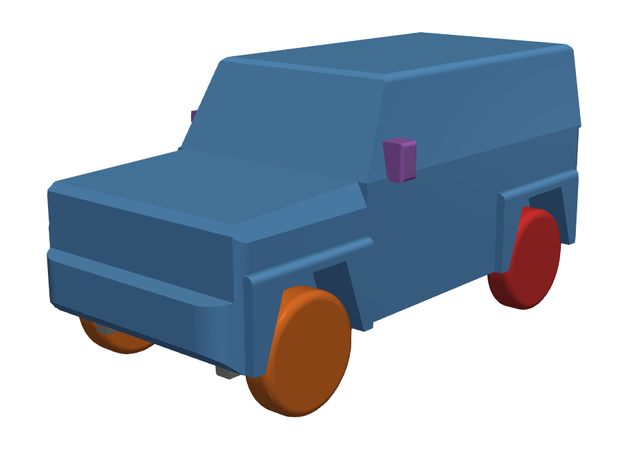
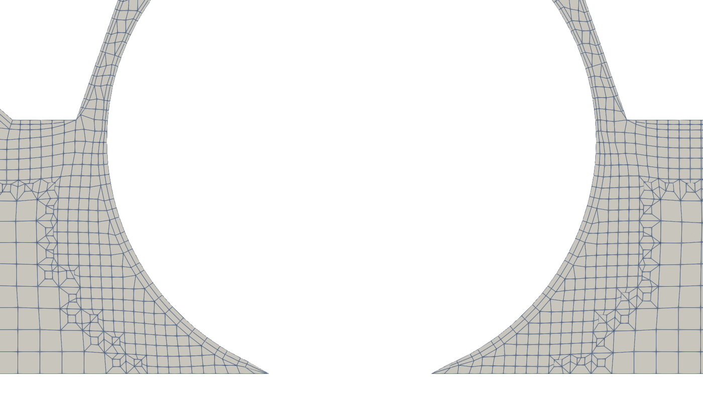
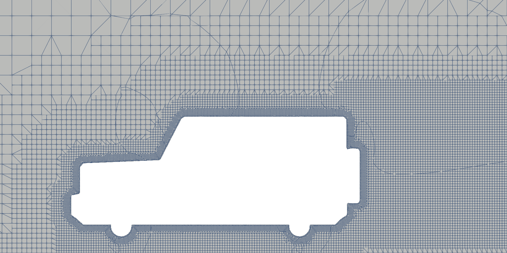
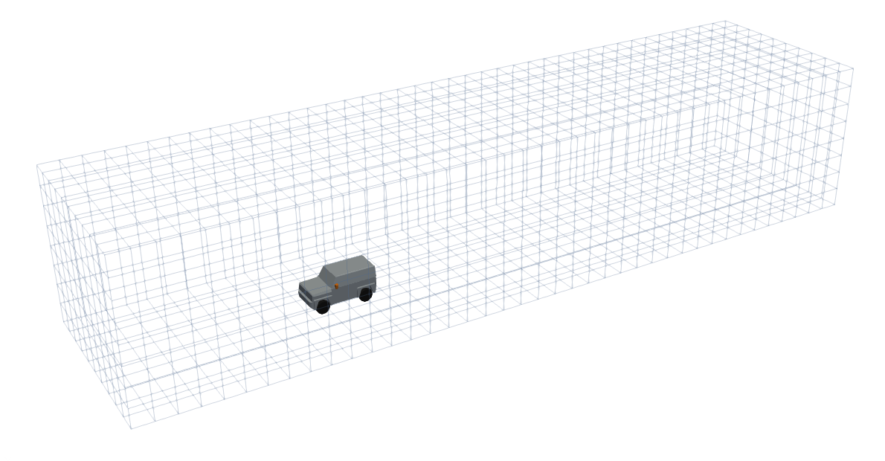

From motorBikeSteady to the Jimny: setting up the case
The motorBikeSteady tutorial of OpenFOAM, turned file by file into the case of a full Suzuki Jimny at 100 km/h: the geometry with its six regions, the virtual wind tunnel, the snappyHexMesh recipe, the moving ground, the rotating wheels and the force coefficients. Every file of the case is commented.
OpenFOAM · Flujo incompresible · Tutorial 3.1
Del motorBikeSteady al Jimny: preparar el caso
El tutorial motorBikeSteady de OpenFOAM, convertido archivo por archivo en el caso de un Suzuki Jimny completo a 100 km/h: la geometría con sus seis regiones, el túnel virtual, la receta de snappyHexMesh, el suelo móvil, las ruedas que giran y los coeficientes de fuerza. Todos los archivos del caso van comentados.
OpenFOAM · Inkompressible Strömung · Tutorial 3.1
Vom motorBikeSteady zum Jimny: den Fall vorbereiten
Das OpenFOAM-Tutorial motorBikeSteady, Datei für Datei in den Fall eines vollständigen Suzuki Jimny bei 100 km/h umgebaut: die Geometrie mit ihren sechs Regionen, der virtuelle Windkanal, das Rezept für snappyHexMesh, der bewegte Boden, die drehenden Räder und die Kraftbeiwerte. Alle Dateien des Falls sind kommentiert.
Estimated reading: 60 minLectura estimada: 60 minLesedauer: ca. 60 minLevel: undergraduateNivel: licenciaturaNiveau: BachelorVerified on OpenFOAM 12 (blueCFD-Core 2024) and ParaView 5.11.2Verificado en OpenFOAM 12 (blueCFD-Core 2024) y ParaView 5.11.2Geprüft mit OpenFOAM 12 (blueCFD-Core 2024) und ParaView 5.11.2
Full English translation in preparation. Each section below carries a summary of its content; the complete text, figures and tables are available in the Spanish version, which the ES button above selects.
Start from an OpenFOAM tutorial and adapt it to your own vehicle: what each folder of a case holds, which dictionaries change and which do not, how a geometry with named regions becomes boundary patches, and how the snappyHexMesh recipe is written. Running the case in parallel is Tutorial 3.2.
The problem
What is simulated
A full three-door Suzuki Jimny (own FreeCAD model, 3.64 × 1.72 × 1.73 m, frontal area 2.435 m²) at 100 km/h, Re = 6.7·10⁶ with the length, on a moving ground and with rotating wheels; k-ω SST with wall functions.
The theory
Coefficients, the virtual tunnel and the mesh
Drag and lift coefficients and the lift per axle; the virtual wind tunnel: size, blockage (3.0 %), slip walls and the moving ground; rotating wheels (ω = U/r); what snappyHexMesh does in its three stages and what a refinement level is; layers, y⁺ and wall functions.
Step by step
From motorBikeSteady to the Jimny
Copy motorBikeSteady from $FOAM_TUTORIALS, put the STL in constant/geometry and change, file by file, what the table lists: the tunnel, the snappyHexMesh recipe, the inlet speed and turbulence, the patch group, the wheels, the force references and the number of processes; fvSchemes and fvSolution are taken from the drivaerFastback tutorial, because with those of the motorbike the drag coefficient of the Jimny does not settle.
The case
The files, one by one
Every dictionary of the case, shown complete with its Spanish comments; snappyHexMeshDict in detail.
Worked example
The geometry and the tunnel, checked
The first four steps run in serial to check the preparation: the STL scaled to metres (96 896 triangles, closed, six regions), 2 028 feature edges, and the background mesh of 3 200 cells with the vehicle inside it, seen in ParaView.
Common errors
What goes wrong when preparing the case
Forgetting to scale the STL (a 3.6 km vehicle, and snappyHexMesh finishes «without errors» with no vehicle in the mesh); leaving motorBikeGroup in the fields; keeping the tutorial's maxGlobalCells of two million.
Suggested exercise
The same Jimny at 120 km/h
Prepare the same case at 120 km/h: the three places where the speed lives, the new wheel speed and Reynolds number; check it with the first four steps.
Sources
References
The motorBikeSteady tutorial of OpenFOAM 12; the OpenFOAM user guide on snappyHexMesh; Menter (1994) for k-ω SST; Hucho for road-vehicle aerodynamics.
Objetivos de aprendizaje
Qué se debe poder hacer al terminar
Nadie arma un caso de OpenFOAM desde cero: se parte de un tutorial que se parece al problema y se cambia lo necesario. Este bloque calcula la aerodinámica de un vehículo, un Suzuki Jimny de 3 puertas, y parte del tutorial motorBikeSteady de OpenFOAM, que calcula la de una moto con su piloto. Esta guía prepara el caso, archivo por archivo; el tutorial 3.2 lo corre en paralelo, paso a paso.
Reconocer qué guarda cada carpeta de un caso (0, constant, system) y cuáles de sus archivos cambian al pasar de un problema a otro.
Preparar una geometría con regiones con nombre, y entender cómo cada región se vuelve un parche de la malla con sus propias condiciones de frontera.
Dimensionar un túnel virtual: cuánto espacio dejar delante, detrás y a los lados, y qué condiciones llevan el suelo, el techo y los costados.
Leer y escribir la receta de snappyHexMesh: niveles de refinamiento, aristas, regiones de refinamiento y capas.
Poner el suelo móvil, las ruedas que giran y los coeficientes de fuerza de un vehículo.
Qué hace falta. blueCFD-Core 2024 (OpenFOAM 12) y ParaView, como en los tutoriales anteriores, y el caso ya preparado, jimny.zip: sirve para comparar lo que uno cambia con lo que debe quedar, o para saltarse la preparación e ir directo al 3.2. Todos sus archivos van comentados en español. Conviene haber hecho el tutorial 1.2 (k-ω SST, y⁺ y funciones de pared) y el 2.1 (coeficientes de fuerza).
El problema
Qué se va a simular
El vehículo es un Suzuki Jimny de 3 puertas, modelado en FreeCAD con las medidas del vehículo real (la geometría es propia y viene en el caso). La pregunta es la de cualquier estudio de aerodinámica automotriz: ¿cuánta fuerza de arrastre hace el aire a 100 km/h, y cuánto levanta cada eje? Se calcula el vehículo completo, sobre un suelo que se mueve con el aire y con las ruedas girando (tabla 1).
Cantidad
Valor
De dónde sale
Vehículo
Suzuki Jimny de 3 puertas, modelo propio en FreeCAD
seis regiones, un solid cada una
Largo × ancho × alto
3.64 × 1.715 × 1.740 m
caja de surfaceCheck (el alto incluye 2 cm de llanta hundida en el suelo)
Tabla 1.El caso del Jimny. Las medidas son las del STL del caso, ya en metros (salida de surfaceCheck); el área frontal es la del modelo de FreeCAD con espejos. La velocidad y la turbulencia de entrada están en 0/include/initialConditions.

Figura 1.Las seis regiones del Jimny. El STL del caso visto desde adelante y a la izquierda: carrocería (azul), espejos (morado), ruedas delanteras (naranja) y traseras (rojo); los bajos y la refacción quedan ocultos. Cada color es un solid del STL y será un parche de la malla. Las llantas son cilindros con los hombros redondeados, hundidos 15 mm en el suelo (z = 0). Render de ParaView sobre el STL del caso.
La geometría viene en un STL con seis regiones, una por parte del vehículo (figura 1 y tabla 2). Separarlas tiene un propósito: cada región se vuelve un parche de la malla, y así las ruedas pueden girar mientras la carrocería no, y las fuerzas se pueden pedir por partes.
Región (parche)
Triángulos
Qué es
Condición de U
carroceria
1 152
la carrocería: cabina, cofre, salpicaderas, defensas
noSlip (grupo)
bajos
8 620
largueros, ejes y diferenciales
noSlip (grupo)
ruedasDelanteras
39 584
las dos llantas delanteras
rotatingWallVelocity
ruedasTraseras
39 696
las dos llantas traseras
rotatingWallVelocity
refaccion
7 388
la llanta de refacción, en la puerta trasera
noSlip (grupo)
espejos
456
los dos espejos
noSlip (grupo)
Tabla 2.Las seis regiones del STL. Número de triángulos de cada región, de surfaceCheck. Cada región se vuelve un parche de la malla con su nombre, y las seis quedan en el grupo jimnyGroup.
El Jimny es un vehículo de caja: frente casi vertical, aristas vivas, cola recta. Es lo contrario de un auto aerodinámico, y por eso su coeficiente de arrastre es alto —del orden de 0.5, contra 0.25–0.30 de un sedán moderno (Hucho, 1998)—. Ese número sale en el tutorial 3.3.
La teoría
Coeficientes, túnel virtual y malla
Los coeficientes de fuerza y el levante por eje
Las fuerzas sobre el vehículo se hacen adimensionales con la presión dinámica y el área frontal \(A\):
\(C_m\) es el momento de cabeceo alrededor del punto medio entre los ejes, adimensional con la distancia entre ejes. El levante total se reparte así entre el eje delantero (\(C_{L,f}\)) y el trasero (\(C_{L,r}\)): un levante positivo descarga ese eje y le quita adherencia. La función forceCoeffs escribe los cinco en cada iteración. Como el solver es incompresible y trabaja con la presión dividida entre la densidad, se pone \(\rho\) = 1: los coeficientes salen bien, y las fuerzas, por unidad de densidad.
El túnel virtual
Un vehículo en la carretera tiene aire hasta el infinito; el cálculo, un túnel de tamaño finito. El túnel tiene que ser lo bastante grande para que sus paredes no cambien el flujo alrededor del vehículo:
Delante, unos tres largos del vehículo: el aire se entera de que viene un obstáculo antes de llegar a él. Aquí, 10 m (2.7 largos).
Detrás, varios largos, para que la estela salga sin rebotar en la salida. Aquí, 26 m (7 largos).
A los lados y arriba, lo necesario para que el vehículo tape poco de la sección: el bloqueo es el área frontal entre el área de la sección. Con 10 × 8 m queda en 3.0 %: el vehículo acelera un poco el aire que pasa a sus lados, y el arrastre sale unos pocos por ciento mayor que al aire libre. Un túnel más grande lo reduce, a cambio de más celdas.
El techo y los costados llevan la condición slip: paredes sin fricción, que sólo impiden que el aire las cruce. El suelo es distinto: en el marco del vehículo, el camino pasa por debajo a la velocidad del aire, así que el suelo es una pared que se mueve a \(U_\infty\). Un suelo quieto formaría una capa límite que en la carretera no existe; los túneles de viento automotrices usan una banda móvil por la misma razón. La figura 2 muestra el túnel a escala.
Figura 2.El túnel virtual y las cajas de refinamiento. A escala, con las cifras de blockMeshDict y de snappyHexMeshDict. El túnel mide 40 × 10 × 8 m; el Jimny (naranja) queda a 10 m de la entrada y a 26 m de la salida. Las cajas marcan dónde snappyHexMesh pone celdas más chicas: más oscuro, más fino. Cerca del vehículo, además, manda la distancia a su superficie (tabla 3).
Las ruedas que giran
Una rueda que rueda sin deslizar tiene velocidad cero en el contacto con el suelo, que en el marco del vehículo se mueve a \(U_\infty\): la rueda gira con
con \(r\) el radio de rodadura, la altura del eje sobre el suelo. La condición rotatingWallVelocity le impone a cada cara de la llanta la velocidad \(\boldsymbol{\omega}\times\mathbf{r}\) del giro, sin mover la malla. Para que el contacto sea una huella y no una línea (una tangencia que snappyHexMesh no puede mallar bien), las llantas están hundidas 15 mm en el suelo.
La figura 3 muestra cómo queda en la malla: la llanta apoyada en el suelo y, a cada lado del contacto, una cuña delgada.

Figura 3.Donde la llanta toca el suelo. Corte de la malla de la corrida de referencia por el plano de la rueda delantera izquierda (y = 0.6975 m), de cerca. El hueco blanco es la llanta; el borde de abajo, el suelo (z = 0). Como la llanta está hundida 15 mm, toca el suelo en una franja plana de unos 20 cm, sin celdas. A cada lado de la franja queda una cuña de 17° entre la llanta y el suelo, con celdas aplastadas: ahí están, con toda probabilidad, las caras sesgadas que señala checkMesh (aparecieron al hacer redondas las llantas). Junto a la llanta se ven sus dos capas. Render de ParaView sin ventana sobre la malla reconstruida.
Lo que hace snappyHexMesh
La malla se hace en dos programas. blockMesh llena el túnel de cubos iguales, aquí de 1 m: la malla de fondo. snappyHexMesh la adapta al vehículo en tres etapas:
1Refinar y recortar (castellatedMesh): parte en ocho los cubos cerca del vehículo, una y otra vez, y quita los que quedan dentro de él. Queda una superficie escalonada.
2Ajustar (snap): mueve los vértices de esa superficie escalonada hasta la del STL, siguiendo también sus aristas vivas.
3Capas (addLayers): agrega capas delgadas pegadas a las paredes, para la capa límite.
Cada vez que un cubo se parte en ocho, sube un nivel: con la malla de fondo de 1 m, una celda de nivel \(k\) mide \(1/2^k\) m. La receta dice qué nivel quiere cada zona: por superficie (cada región del STL), por arista, por distancia a la superficie y por cajas en el volumen (tabla 3). Las zonas más finas van donde el flujo cambia más: la superficie, donde el aire se despega, la estela y el hueco entre el piso y el suelo.
Nivel
Celda
Dónde
0
1 m
la malla de fondo de blockMesh, lejos de todo
3
12.5 cm
cajas upstream y downstream: delante, alrededor y la estela lejana
4
6.25 cm
cajas underbody y wake; hasta 80 cm del vehículo
5
3.1 cm
cajas bajosCerca y estelaCerca; hasta 25 cm del vehículo; bajos, ruedas, refacción y espejos (mínimo)
6
1.56 cm
la carrocería entera; las aristas vivas; hasta 5 cm del vehículo; las demás regiones donde se curvan
capas
2, de unos 0.65 y 0.78 cm
en las seis regiones del Jimny, con la primera celda en la zona logarítmica
Tabla 3.La receta de snappyHexMesh, nivel por nivel. Con la malla de fondo de 1 m, el nivel n tiene celdas de 1/2n m. Cada fila dice dónde se pide ese nivel en system/snappyHexMeshDict.
La figura 4 adelanta lo que produce esta receta, que se corre en el tutorial 3.2: la malla cortada por el centro del vehículo, con cada zona en su nivel.

Figura 4.Lo que produce la receta: la malla cortada por el centro del vehículo. Corte por y = 0 de la malla de la corrida de referencia (2 123 371 celdas), entre la defensa (izquierda) y la estela (derecha). Se ven los saltos de nivel —cada uno parte la celda en dos en cada dirección—, la banda fina que rodea al vehículo (niveles 6 y 5, por distancia), la caja de la estela cercana detrás y las dos capas pegadas a la carrocería. Las líneas oblicuas largas no son celdas: salen de dibujar el corte de las celdas poliédricas que snappyHexMesh deja en las transiciones entre niveles. Los dos huecos de abajo son los ejes. Render de ParaView sin ventana sobre la malla reconstruida.
Las capas, y⁺ y las funciones de pared
Como en el tutorial 1.2, la primera celda junto a la pared decide cómo se trata la capa límite. Resolverla hasta la subcapa viscosa (y⁺ ≈ 1) pediría celdas de centésimas de milímetro en toda la carrocería y decenas de millones de celdas. Aquí se usan funciones de pared: la primera celda queda en la zona logarítmica (y⁺ ≈ 30–300) y una ley de pared pone el esfuerzo que corresponde. Dos capas sobre celdas de 1.6 cm dan una primera celda de unos 6.5 mm; en la corrida de referencia, la y⁺ de la carrocería quedó en 182 en promedio (máximo 2499), dentro de la zona logarítmica. Las condiciones de pared de k, omega y nut son las funciones de pared del motorBikeSteady, sin cambios.
Paso a paso
Del motorBikeSteady al Jimny
La receta tiene dos partes: copiar el tutorial y hacerle los cambios (pasos 1 a 7), y revisar la preparación con los cuatro primeros programas, que corren en segundos (pasos 8 y 9). La tabla 4 resume todos los cambios; la sección «El caso» muestra cada archivo terminado. Quien descargue jimny.zip tiene ya el resultado de los pasos 1 a 7.
Archivo
motorBikeSteady
Jimny
Por qué
constant/geometry/
motorBike.obj.gz (lo copia Allrun)
jimny_mm.stl, en milímetros
la geometría nueva
system/blockMeshDict
20 × 8 × 8 m, celdas de 1 m
40 × 10 × 8 m, celdas de 1 m
el Jimny mide 3.6 m: más túnel delante y detrás
system/surfaceFeaturesDict
motorBike.obj, 150°
jimny.stl, 150°
sólo el nombre
system/snappyHexMeshDict
una caja, superficie (5 6), 1 capa, 2 M celdas como máximo
seis regiones, seis cajas, bandas de distancia, carrocería (6 6), 2 capas, 100 M como máximo
la receta probada con el Jimny y el DrivAer
0/include/initialConditions
20 m/s; k = 0.24, ω = 1.78
27.78 m/s; k = 0.005, ω = 2.0; las ruedas
100 km/h, poca turbulencia de entrada
0/U.orig, k, omega, nut, p
motorBikeGroup
jimnyGroup; las ruedas con rotatingWallVelocity
el nombre del grupo y las ruedas
system/forceCoeffs
20 m/s, 0.75 m², 1.42 m
27.78 m/s, 2.435 m², 2.25 m
las referencias del Jimny
system/streamlines
línea a x = −1 m, 1 m de alto
línea a x = −1 m, del suelo al techo
el Jimny es más alto
system/controlDict
500 iteraciones, escribe cada 100
2000, escribe cada 500
el Jimny necesita más iteraciones
system/decomposeParDict
6 procesos (3 × 2 × 1); distributor ptscotch
8 procesos (4 × 2 × 1); distributor hierarchical
uno por núcleo; el mismo método para repartir y para rebalancear (ptscotch también funciona)
system/functions
corte, líneas de corriente, fuerzas
lo mismo, más y⁺ y residuos
para revisar la pared y la convergencia
system/meshQualityDict
los valores de OpenFOAM, con minFaceWeight 0.02
los valores de OpenFOAM, escritos uno por uno
los de la receta probada, a la vista
Allrun, Allclean
copia la moto y corre la secuencia
escala el STL, revisa la superficie y la malla, y corre la secuencia
dos pasos más
system/fvSchemes, system/fvSolution
k y ω con upwind; SIMPLE consistente, U 0.9
los del tutorial drivaerFastback: k y ω con limitedLinear; SIMPLE, p 0.3, U 0.7
con los de la moto el Cd del Jimny oscila
momentumTransport, physicalProperties
k-ω SST; ν = 1.5·10−5 m²/s
sin cambios (sólo comentarios)
—
Tabla 4.Qué cambia del motorBikeSteady al Jimny. Archivo por archivo, el tutorial motorBikeSteady de OpenFOAM 12 (blueCFD-Core 2024) y el caso del Jimny. Lo que no aparece no cambia; todos los archivos del caso llevan además comentarios en español.
Copiar el tutorial a la carpeta de casos, en la terminal de blueCFD-Core, y entrar en él:
cp -r $FOAM_TUTORIALS/incompressibleFluid/motorBikeSteady $FOAM_RUN/jimny
cd $FOAM_RUN/jimny
La carpeta queda como la del caso terminado, menos la geometría:
jimny/
├── 0/ condiciones iniciales y de frontera
│ ├── include/
│ │ ├── initialConditions velocidad, turbulencia y ruedas, en un solo lugar
│ │ ├── fixedInlet la condición de la entrada
│ │ └── frontBackUpperPatches techo y costados: slip
│ ├── U.orig k omega nut p
├── constant/
│ ├── geometry/jimny_mm.stl la geometría, en milímetros
│ ├── momentumTransport k-omega SST
│ └── physicalProperties nu del aire
├── system/
│ ├── blockMeshDict el túnel (malla de fondo)
│ ├── surfaceFeaturesDict aristas vivas del STL
│ ├── snappyHexMeshDict la receta de la malla
│ ├── meshQualityDict límites de calidad para snappyHexMesh
│ ├── decomposeParDict el reparto entre procesos
│ ├── controlDict fvSchemes fvSolution
│ ├── functions lo que se calcula al correr
│ └── forceCoeffs cutPlane streamlines
├── Allrun toda la secuencia, en un comando
└── Allclean deja el caso como se descargó
La geometría. Copiar jimny_mm.stl a constant/geometry/ y borrar el README que trae esa carpeta (dice que Allrun copia la moto, cosa que ya no hará). El STL está en milímetros, como sale de FreeCAD; se escala a metros en el paso 8.
El túnel y la malla:system/blockMeshDict (40 × 10 × 8 m, figura 2), system/surfaceFeaturesDict (el nombre del STL) y system/snappyHexMeshDict, que se reescribe con la receta del Jimny (sección «El caso»). En snappyHexMeshDict, dos cifras del tutorial se quedan cortas: maxGlobalCells 2000000, que detiene el refinamiento al pasar de dos millones de celdas, y nSurfaceLayers 1.
El flujo: en 0/include/initialConditions, la velocidad (27.78 m/s), la turbulencia de entrada y los datos de las ruedas. En 0/U.orig, 0/k, 0/omega, 0/nut y 0/p, el grupo motorBikeGroup pasa a llamarse jimnyGroup (el nombre que le da snappyHexMeshDict a las seis regiones), y en 0/U.orig se agregan las dos entradas de las ruedas.
Lo que se mide: en system/forceCoeffs, el grupo y las tres referencias (velocidad, área frontal y distancia entre ejes); en system/streamlines, la línea de partida; en system/functions, y⁺ y los residuos; en system/controlDict, 2000 iteraciones.
El método numérico:system/fvSchemes y system/fvSolution se reemplazan por los del tutorial drivaerFastback, el de un auto completo (en $FOAM_TUTORIALS/incompressibleFluid/drivaerFastback/system/). Es el único cambio que no sale de la geometría; el recuadro de abajo explica por qué.
El paralelo: en system/decomposeParDict, el número de procesos: uno por núcleo de la computadora (8 en la de referencia; el tutorial trae 6), y la forma de cortar el dominio, n (4 2 1), que debe multiplicar ese número.
Escalar y revisar la geometría: de milímetros a metros, y una revisión de la superficie:
| tee log.surfaceCheck muestra la salida en la terminal y la guarda en un archivo, para leerla después con calma.
Las aristas y la malla de fondo:
surfaceFeatures | tee log.surfaceFeatures
blockMesh | tee log.blockMesh
y abrir el caso en ParaView para ver el vehículo dentro del túnel (sección «Ejemplo resuelto»).
El caso queda listo para la malla. En el tutorial 3.2 se corre el resto en paralelo, paso a paso: decomposePar, snappyHexMesh, checkMesh, potentialFoam, foamRun y reconstructPar. ./Allrun hace los diez pasos con un solo comando.
Por qué dos tutoriales. La tabla 4 tiene quince renglones, pero casi todo lo que no es la geometría se hereda: la estructura de 0/include, el modelo de turbulencia y sus condiciones de pared, el Allrun. Son decisiones que los autores del tutorial ya probaron. El método numérico es la excepción, y es la lección de este bloque: heredar no es lo mismo que validar. Con los esquemas y la relajación del motorBikeSteady, el Cd del Jimny no se asienta: en la exploración de este caso osciló alrededor de 0.59 con una desviación de ±0.045. Con los del drivaerFastback, pensados para un auto, y la misma malla, se asentó en 0.565 ± 0.006. Un cuerpo de caja, con la estela grande y despegada detrás, pide un método más amortiguado que el de una moto.
El caso
Los archivos, uno por uno
Los archivos del caso, uno por uno, tal como vienen en jimny.zip, con sus comentarios. Las líneas que empiezan con // son comentarios: OpenFOAM las ignora. Se omite el encabezado de cada archivo, que es igual en todos.
Las condiciones del flujo: 0/include/initialConditions y 0/U.orig
La velocidad, la turbulencia y las ruedas están en un solo archivo, que leen todos los campos con #include: para cambiar la velocidad basta con cambiarla aquí (y en forceCoeffs, práctica sugerida).
0/include/initialConditions
/*--------------------------------*- C++ -*----------------------------------*\
========= |
\\ / F ield | OpenFOAM: The Open Source CFD Toolbox
\\ / O peration | Website: https://openfoam.org
\\ / A nd | Version: 12
\\/ M anipulation |
\*---------------------------------------------------------------------------*/
// Valores de la corriente libre y de las ruedas. Los leen 0/U.orig, 0/k, 0/omega y 0/p con
// #include "include/initialConditions", así que la velocidad se cambia en un solo lugar.
// Viene del tutorial motorBikeSteady (allí, 20 m/s); se cambiaron la velocidad y la turbulencia
// de entrada, y se agregaron las ruedas.
// Velocidad del aire: 100 km/h = 27.78 m/s en dirección x (el vehículo apunta hacia -x y el aire
// corre hacia +x). Con el largo del Jimny (3.64 m) y nu = 1.5e-5 m²/s, Re = 6.7e6.
flowVelocity (27.78 0 0);
// Presión cinemática (p/rho, en m²/s²). Sólo importan las diferencias: se fija p = 0 en la salida.
pressure 0;
// Turbulencia de la corriente libre. Una carretera en calma tiene poca turbulencia:
// k = 0.005 m²/s² es una intensidad I = sqrt(2k/3)/U ≈ 0.2 %, y omega = 2 1/s da nu_t/nu ≈ 170.
// (El motorBikeSteady usa k = 0.24 y omega = 1.78: 2 % de intensidad y nu_t/nu ≈ 9000, propio de
// un túnel muy turbulento.)
turbulentKE 0.005;
turbulentOmega 2.0;
// Ruedas que giran sin deslizar: velocidad angular = U / radio de rodadura. Si se cambia la velocidad,
// hay que recalcular wheelSpeed.
// El radio de rodadura es la altura del eje: la llanta de 346.5 mm de radio está hundida 15 mm en el
// suelo, como una llanta real aplastada por el peso, y el contacto es una franja y no una línea
// (snappyHexMesh no malla bien una tangencia).
wheelRadius 0.3315;
wheelFront 0.63; // x del eje delantero [m]
wheelBase 2.25; // distancia entre ejes [m]
wheelRear 2.88; // x del eje trasero [m] = wheelFront + wheelBase
wheelSpeed 83.80; // [rad/s] = 27.78 / wheelRadius
// ************************************************************************* //
/*--------------------------------*- C++ -*----------------------------------*\
========= |
\\ / F ield | OpenFOAM: The Open Source CFD Toolbox
\\ / O peration | Website: https://openfoam.org
\\ / A nd | Version: 12
\\/ M anipulation |
\*---------------------------------------------------------------------------*/
flowVelocity (20 0 0);
pressure 0;
turbulentKE 0.24;
turbulentOmega 1.78;
// ************************************************************************* //
0/U.orig
FoamFile
{
format ascii;
class volVectorField;
location "0";
object U;
}
// * * * * * * * * * * * * * * * * * * * * * * * * * * * * * * * * * * * * * //
// Velocidad [m/s]. Se llama U.orig, como en motorBikeSteady: potentialFoam escribe un campo U nuevo
// (el flujo potencial con que arranca el cálculo), y OpenFOAM lee U.orig cuando U no existe. Así el
// original no se pierde y el caso se puede volver a correr desde cero.
#include "include/initialConditions"
dimensions [0 1 -1 0 0 0 0];
internalField uniform $flowVelocity;
boundaryField
{
// Condiciones de las fronteras de restricción (symmetryPlane, empty, processor…).
#includeEtc "caseDicts/setConstraintTypes"
// Entrada: la velocidad de la corriente libre (include/fixedInlet).
#include "include/fixedInlet"
// Salida: el aire sale libremente; si en algún punto quisiera entrar, se le impone U = 0.
outlet
{
type inletOutlet;
inletValue uniform (0 0 0);
value $internalField;
}
// Suelo: se mueve a la velocidad del aire, como la banda de un túnel de viento automotriz. En el
// marco del vehículo el camino pasa debajo a 100 km/h; un suelo quieto formaría una capa límite que
// no existe en la carretera.
lowerWall
{
type fixedValue;
value $internalField;
}
// Carrocería, bajos, refacción y espejos: pared sin deslizamiento (U = 0). jimnyGroup es el grupo
// que snappyHexMeshDict da a las seis regiones del STL.
jimnyGroup
{
type noSlip;
}
// Las ruedas giran: velocidad tangencial = omega × r alrededor del eje (eje y, giro hacia atrás
// por abajo). Una entrada con el nombre de un parche manda sobre la del grupo.
ruedasDelanteras
{
type rotatingWallVelocity;
origin ($wheelFront 0 $wheelRadius);
axis (0 -1 0);
omega $wheelSpeed;
}
ruedasTraseras
{
$ruedasDelanteras;
origin ($wheelRear 0 $wheelRadius);
}
// Techo y costados del túnel: slip (include/frontBackUpperPatches).
#include "include/frontBackUpperPatches"
}
// ************************************************************************* //
Dos detalles de 0/U.orig. El nombre: potentialFoam escribe un campo U nuevo, y OpenFOAM lee U.orig cuando U no existe, así que el original se conserva. Y la regla de prioridad: el grupo jimnyGroup le pone noSlip a las seis regiones, pero las entradas con el nombre de un parche (ruedasDelanteras, ruedasTraseras) mandan sobre las del grupo. 0/k, 0/omega, 0/nut y 0/p sólo cambian el nombre del grupo.
El túnel: system/blockMeshDict
system/blockMeshDict
FoamFile
{
format ascii;
class dictionary;
object blockMeshDict;
}
// * * * * * * * * * * * * * * * * * * * * * * * * * * * * * * * * * * * * * //
// El túnel virtual: un solo bloque de celdas cúbicas de 1 m que snappyHexMesh refinará alrededor del
// vehículo. Es la «malla de fondo»: su tamaño fija el de todas las demás (nivel n = 1 m / 2^n; nivel 6
// = 1.6 cm).
//
// El Jimny va de x = 0 (defensa) a x = 3.64 m (refacción), de y = -0.86 a 0.86 m y de z = 0 (suelo) a
// 1.73 m. El túnel deja 10 m delante (2.7 largos), 26 m detrás (7 largos, para que la estela salga
// sin tocar la salida) y 5 m a cada lado y 8 m de alto (área frontal tapada: 3 %).
// En motorBikeSteady el bloque es de 20 × 8 × 8 m para una moto de 2 m; aquí se agrandó.
convertToMeters 1;
vertices
(
(-10 -5 0) // 0 entrada, lado derecho, suelo
( 30 -5 0) // 1 salida
( 30 5 0) // 2
(-10 5 0) // 3
(-10 -5 8) // 4 los mismos cuatro, en el techo
( 30 -5 8) // 5
( 30 5 8) // 6
(-10 5 8) // 7
);
blocks
(
// 40 × 10 × 8 celdas de 1 m.
hex (0 1 2 3 4 5 6 7) (40 10 8) simpleGrading (1 1 1)
);
// Las fronteras llevan los mismos nombres que en motorBikeSteady, para que sirvan sus condiciones de
// 0/ (entrada, salida, suelo, techo y costados).
boundary
(
frontAndBack // los dos costados (y = ±5 m): slip
{
type patch;
faces
(
(3 7 6 2)
(1 5 4 0)
);
}
inlet // entrada (x = -10 m)
{
type patch;
faces
(
(0 4 7 3)
);
}
outlet // salida (x = 30 m)
{
type patch;
faces
(
(2 6 5 1)
);
}
lowerWall // el suelo (z = 0): pared que se mueve con el aire
{
type wall;
faces
(
(0 3 2 1)
);
}
upperWall // el techo (z = 8 m): slip
{
type patch;
faces
(
(4 5 6 7)
);
}
);
// ************************************************************************* //
Los vértices se numeran del 0 al 7: los cuatro del suelo y los cuatro del techo, en el mismo orden. hex (0 1 2 3 4 5 6 7) (40 10 8) es un bloque con 40 × 10 × 8 celdas. Cada frontera es una lista de caras, cada cara cuatro vértices. Los nombres son los del tutorial, para que sirvan sus condiciones de 0/.
La receta de la malla: system/snappyHexMeshDict
Es el archivo central del caso. Va completo y con todos sus valores escritos, incluidos los que otros casos dejan en los valores por omisión de OpenFOAM, para que se vea todo lo que decide la malla:
system/snappyHexMeshDict
FoamFile
{
format ascii;
class dictionary;
object snappyHexMeshDict;
}
// * * * * * * * * * * * * * * * * * * * * * * * * * * * * * * * * * * * * * //
// snappyHexMesh convierte la malla de fondo de blockMesh (cubos de 1 m) en una malla que sigue la forma
// del Jimny, en tres etapas que se encienden aquí:
//
// 1. castellatedMesh: parte en ocho los cubos cerca del vehículo, una y otra vez («niveles»), y
// quita los que quedan dentro del vehículo. Queda una superficie escalonada, «almenada».
// 2. snap: mueve los vértices de esa superficie escalonada hasta la superficie del STL.
// 3. addLayers: agrega capas de celdas delgadas pegadas a las paredes, para la capa límite.
//
// Tamaño de celda en cada nivel, con la malla de fondo de 1 m: nivel n = 1 m / 2^n.
// nivel 3 = 12.5 cm nivel 4 = 6.25 cm nivel 5 = 3.1 cm nivel 6 = 1.56 cm
//
// La estructura es la de motorBikeSteady; los niveles, las cajas y las capas son la receta que se
// probó antes con el Jimny y con el DrivAer, un auto de referencia: unos 2.1 millones de celdas.
castellatedMesh on; // etapa 1
snap on; // etapa 2
addLayers on; // etapa 3
// ---------------------------------------------------------------------------------------------------
// GEOMETRÍA: las superficies que se usan para refinar o para ajustar la malla.
// ---------------------------------------------------------------------------------------------------
geometry
{
// El Jimny: un STL en metros (Allrun lo escala desde jimny_mm.stl) con seis «solid», uno por
// región. Cada región se vuelve un parche con su nombre, y así las fuerzas, las condiciones de
// frontera y la malla se pueden dar por separado (por ejemplo, las ruedas giran y el resto no).
jimny
{
type triSurfaceMesh; // en OpenFOAM 13 se llama triSurface
file "jimny.stl";
regions
{
carroceria { name carroceria; }
bajos { name bajos; } // largueros, ejes y diferenciales
ruedasDelanteras { name ruedasDelanteras; }
ruedasTraseras { name ruedasTraseras; }
refaccion { name refaccion; } // la llanta de refacción en la puerta trasera
espejos { name espejos; }
}
}
// Cajas para refinar el volumen (no son paredes: sólo marcan dónde poner celdas más chicas).
// min y max son esquinas opuestas [m]. El Jimny ocupa x de 0 a 3.64, y de -0.86 a 0.86, z de 0 a 1.73.
upstream { type searchableBox; min (-10 -1.5 0); max (3.7 1.5 1.0); } // delante y alrededor, baja
underbody { type searchableBox; min (-10 -1.2 0); max (3.7 1.2 0.25); } // franja bajo el vehículo
wake { type searchableBox; min (3.3 -1.4 0); max (9.0 1.4 2.2); } // estela, hasta 5 m detrás
estelaCerca { type searchableBox; min (3.3 -1.3 0.05); max (8.0 1.3 2.2); } // estela cercana, más fina
bajosCerca { type searchableBox; min (-0.2 -1.0 0); max (3.7 1.0 0.4); } // entre el piso y el suelo
downstream { type searchableBox; min (3.3 -1.6 0); max (30 1.6 2.3); } // estela lejana, hasta la salida
// (en OpenFOAM 13 el tipo se llama box)
};
// ---------------------------------------------------------------------------------------------------
// ETAPA 1: REFINAR Y RECORTAR
// ---------------------------------------------------------------------------------------------------
castellatedMeshControls
{
// Límites de celdas: si se alcanzan, el refinamiento se detiene antes de terminar. motorBikeSteady
// pone maxGlobalCells 2000000, que se queda corto para el Jimny (2.1 millones): se subió.
maxLocalCells 100000; // por procesador, antes de repartir la carga
maxGlobalCells 100000000; // en total
minRefinementCells 10; // si quedan menos celdas por refinar, termina
maxLoadUnbalance 0.10; // reparte la carga entre procesadores si se desequilibra más de 10 %
// Cuántas celdas de cada nivel separan una zona de la siguiente: con 5, el tamaño cambia
// gradualmente (motorBikeSteady usa 3).
nCellsBetweenLevels 5;
// Aristas del vehículo (el archivo .eMesh que escribe surfaceFeatures): las celdas que tocan una
// arista viva (techo, cofre, defensas, salpicaderas) se refinan a nivel 6, para que la malla
// pueda seguir la arista en la etapa 2.
features
(
{ file "jimny.eMesh"; level 6; }
);
// Refinamiento por superficie: (mínimo máximo). Toda celda que corta la superficie llega al nivel
// mínimo; si la superficie se curva más que resolveFeatureAngle dentro de la celda, al máximo.
refinementSurfaces
{
jimny
{
level (5 6); // regiones en general: 3.1 a 1.6 cm
// type wall: los parches salen como pared. inGroups: los seis quedan en el grupo
// jimnyGroup, que usan las condiciones de 0/ y las fuerzas (system/forceCoeffs).
patchInfo
{
type wall;
inGroups (jimnyGroup);
}
regions
{
carroceria { level (6 6); } // la carrocería, toda a 1.6 cm: es la que da el arrastre
}
}
}
// Ángulo [°] a partir del cual una celda se refina al nivel máximo de su superficie.
resolveFeatureAngle 30;
// Valor por omisión de OpenFOAM (caseDicts/mesh/generation/snappyHexMeshDict.cfg), con el que se
// probó la receta; motorBikeSteady no lo escribe.
extendedRefinementSpan true;
// Refinamiento del volumen.
refinementRegions
{
// Por distancia al vehículo: hasta 5 cm, nivel 6; hasta 25 cm, nivel 5; hasta 80 cm, nivel 4.
// Es la capa de celdas finas que rodea al vehículo y recoge la capa límite y el despegue.
jimny
{
mode distance;
levels ((0.05 6) (0.25 5) (0.8 4));
}
// Dentro de las cajas: el nivel que se indica.
"(estelaCerca|bajosCerca)" // las comillas permiten nombres con expresiones regulares
{
mode inside;
level 5;
}
"(wake|underbody)"
{
mode inside;
level 4;
}
".*stream" // upstream y downstream
{
mode inside;
level 3;
}
}
// Un punto en el aire, fuera del vehículo: snappyHexMesh conserva la parte de la malla que lo
// contiene y descarta la de dentro del vehículo. Si cayera dentro del Jimny, se quedaría con el
// interior del vehículo.
insidePoint (-5 2 3);
// Permite caras interiores sueltas en zonas de celdas (aquí no hay zonas; se deja como en
// motorBikeSteady).
allowFreeStandingZoneFaces true;
}
// ---------------------------------------------------------------------------------------------------
// ETAPA 2: AJUSTAR A LA SUPERFICIE
// ---------------------------------------------------------------------------------------------------
snapControls
{
nSmoothPatch 3; // suavizados de la superficie antes de buscar a qué punto del STL mover
// cada vértice
tolerance 2.0; // distancia de búsqueda, en múltiplos del tamaño local de celda
nSolveIter 100; // iteraciones para relajar el desplazamiento hacia el interior de la malla
// (motorBikeSteady: 30)
nRelaxIter 5; // si una zona sale de los límites de meshQualityDict, cuántas veces se
// reduce su desplazamiento
nFeatureSnapIter 10; // iteraciones para ajustar los vértices a las aristas
explicitFeatureSnap true; // usar las aristas del .eMesh
implicitFeatureSnap false; // no adivinarlas de la superficie
multiRegionFeatureSnap false; // no tratar como arista la frontera entre dos regiones
}
// ---------------------------------------------------------------------------------------------------
// ETAPA 3: CAPAS EN LA PARED
// ---------------------------------------------------------------------------------------------------
addLayersControls
{
// Los espesores se dan relativos al tamaño de la celda junto a la pared.
relativeSizes on;
// Dos capas en todas las regiones del Jimny (el suelo no lleva: se mueve con el aire y casi no
// forma capa límite). Con celdas de 1.6 cm en la carrocería, la última capa mide 0.5 × 1.6 = 0.8 cm
// y la primera 0.8 / 1.2 = 0.65 cm: y+ medio de 180 a 100 km/h, en la zona logarítmica, donde trabajan las
// funciones de pared de 0/. motorBikeSteady usa una capa.
layers
{
"(carroceria|bajos|refaccion|espejos|ruedas.*)"
{
nSurfaceLayers 2;
}
}
expansionRatio 1.2; // cada capa, 1.2 veces la anterior (motorBikeSteady: 1.0)
finalLayerThickness 0.5; // la última capa, 0.5 veces la celda vecina (motorBikeSteady: 0.3)
minThickness 1e-3; // si una capa sale más delgada, no se pone ahí (motorBikeSteady: 0.1)
nGrow 0; // donde un punto no se extruye, cuántas filas de caras vecinas
// tampoco se extruyen (0: ninguna)
featureAngle 100; // en esquinas más agudas que esto, las capas se adelgazan o se quitan
slipFeatureAngle 30;
nRelaxIter 5; // relajaciones del desplazamiento en cada iteración
nRelaxedIter 20; // a partir de esta iteración se usan los límites «relaxed» de
// meshQualityDict
nSmoothSurfaceNormals 1;
nSmoothNormals 3;
nSmoothThickness 10;
maxFaceThicknessRatio 0.5;
maxThicknessToMedialRatio 0.6; // espesor máximo respecto al hueco disponible (rendijas angostas)
minMedialAxisAngle 90;
nMedialAxisIter 10;
nBufferCellsNoExtrude 0;
nLayerIter 50; // iteraciones máximas para agregar capas
}
// Los límites de calidad de las etapas 2 y 3 están en system/meshQualityDict.
meshQualityControls
{
#include "meshQualityDict"
}
// Sin archivos de diagnóstico extra (motorBikeSteady escribe los niveles y la cobertura de las capas
// como campos: scalarLevels, layerSets, layerFields).
writeFlags ();
// Tolerancia para fusionar puntos, relativa al tamaño del dominio.
mergeTolerance 1e-6;
// ************************************************************************* //
geometry nombra las superficies. El STL lleva sus seis regiones; las cajas (searchableBox) son volúmenes para refinar, no paredes.
refinementSurfaces y refinementRegions son la receta de la tabla 3. patchInfo hace de cada región una pared del grupo jimnyGroup.
insidePoint es un punto en el aire: snappyHexMesh conserva la parte de la malla que lo contiene. Si cayera dentro del vehículo, se quedaría con el interior.
layers: dos capas en las seis regiones del Jimny; el suelo no lleva, porque se mueve con el aire.
Las aristas: system/surfaceFeaturesDict
system/surfaceFeaturesDict
FoamFile
{
format ascii;
class dictionary;
object surfaceFeaturesDict;
}
// * * * * * * * * * * * * * * * * * * * * * * * * * * * * * * * * * * * * * //
// surfaceFeatures busca las aristas vivas del STL y las escribe en constant/geometry/jimny.eMesh, que
// snappyHexMesh usa para refinar alrededor de ellas (features) y para ajustar la malla a ellas (snap).
surfaces ("jimny.stl");
// Una arista es «viva» si las dos caras que la forman se doblan más de 180 - 150 = 30°.
// Con 150, salen el contorno del techo, del cofre, de las salpicaderas y de las defensas; las facetas
// suaves de los redondeos no.
includedAngle 150;
subsetFeatures
{
nonManifoldEdges no; // aristas compartidas por más de dos caras (no las hay: cada región está cerrada)
openEdges yes; // aristas de una sola cara (bordes abiertos)
}
// También escribe las aristas en .obj (constant/extendedFeatureEdgeMesh), para verlas en ParaView.
writeObj yes;
// ************************************************************************* //
Las fuerzas: system/forceCoeffs y system/functions
system/forceCoeffs
/*--------------------------------*- C++ -*----------------------------------*\
========= |
\\ / F ield | OpenFOAM: The Open Source CFD Toolbox
\\ / O peration | Website: https://openfoam.org
\\ / A nd | Version: 12
\\/ M anipulation |
\*---------------------------------------------------------------------------*/
// Coeficientes de arrastre, levante y momento de cabeceo del vehículo, en cada iteración.
// Escribe postProcessing/forceCoeffs1/0/forceCoeffs.dat (columnas: Time Cm Cd Cl Cl(f) Cl(r)) y los
// muestra en el registro de foamRun. Estructura de motorBikeSteady; cambian las superficies y las cifras.
//
// Cd = F_x / (0.5 rho U² A), Cl = F_z / (0.5 rho U² A)
// Cl(f) y Cl(r): el levante repartido en el eje delantero y en el trasero (el levante por eje es lo
// que se reporta en la industria: cuánto se descarga cada eje).
forceCoeffs1
{
type forceCoeffs;
libs ("libforces.so");
writeControl timeStep;
timeInterval 1;
log yes;
patches (jimnyGroup); // las seis regiones del Jimny: carrocería, bajos, ruedas, refacción, espejos
rho rhoInf; // incompresible: la presión es cinemática (p/rho)
rhoInf 1; // con rho = 1 los coeficientes salen bien; las fuerzas, por unidad de densidad
liftDir (0 0 1); // levante hacia arriba
dragDir (1 0 0); // arrastre en la dirección del aire
CofR (1.755 0 0); // punto medio entre los ejes, en el suelo (para el momento y el
// reparto del levante por eje)
pitchAxis (0 1 0);
magUInf 27.78; // velocidad de referencia [m/s]: la de include/initialConditions
lRef 2.25; // longitud de referencia [m]: la distancia entre ejes
Aref 2.435; // área frontal [m²] del modelo de FreeCAD (con espejos), medida
// proyectando el STL sobre el plano y-z
}
// ************************************************************************* //
system/functions
FoamFile
{
format ascii;
class dictionary;
object functions;
}
// * * * * * * * * * * * * * * * * * * * * * * * * * * * * * * * * * * * * * //
// Funciones que se calculan mientras corre foamRun. Las tres primeras son las de motorBikeSteady (en
// archivos propios de esta carpeta); las dos últimas vienen listas con OpenFOAM (#includeFunc).
#include "cutPlane" // corte en y = 0
#include "streamlines" // líneas de corriente
#include "forceCoeffs" // Cd, Cl y el levante por eje, en cada iteración
#includeFunc yPlus // y+ de la primera celda en cada pared (postProcessing/yPlus)
#includeFunc residuals(p, U, k, omega) // residuos iniciales en cada iteración (postProcessing/residuals)
// ************************************************************************* //
CofR es el punto medio entre los ejes, en el suelo: alrededor de él se calcula el momento de cabeceo y, con él, el levante de cada eje (ecuación 1). cutPlane y streamlines se quedan como en el tutorial, salvo la línea de donde parten las líneas de corriente.
El paralelo: system/decomposeParDict
system/decomposeParDict
FoamFile
{
format ascii;
class dictionary;
object decomposeParDict;
}
// * * * * * * * * * * * * * * * * * * * * * * * * * * * * * * * * * * * * * //
// Cómo se reparte el dominio entre procesos para correr en paralelo. decomposePar corta la malla en
// numberOfSubdomains pedazos (carpetas processor0, processor1, …) y cada proceso de mpirun resuelve uno.
// Debe coincidir con el -np de mpirun (Allrun lo toma de aquí).
// Uno por núcleo físico de la computadora (la laptop del curso tiene 8). Con más procesos que núcleos
// el cálculo se hace más lento, no más rápido.
numberOfSubdomains 8;
// hierarchical: corta el dominio en 4 pedazos a lo largo de x, 2 a lo largo de y y 1 en z (4 × 2 × 1
// = 8). Es el método de motorBikeSteady.
decomposer hierarchical;
hierarchicalCoeffs
{
n (4 2 1);
order xyz;
}
// distributor: el método con que snappyHexMesh vuelve a repartir la carga cuando el refinamiento deja
// a unos procesos con muchas más celdas que otros. motorBikeSteady usa ptscotch, que también funciona en
// la terminal bash de blueCFD-Core; aquí se usa hierarchical, el mismo método que decomposer. Las dos
// mallas salen prácticamente iguales (2 122 339 y 2 122 148 celdas).
distributor hierarchical;
// ************************************************************************* //
La corrida: system/controlDict
system/controlDict
FoamFile
{
format ascii;
class dictionary;
object controlDict;
}
// * * * * * * * * * * * * * * * * * * * * * * * * * * * * * * * * * * * * * //
// Control de la corrida. Como en motorBikeSteady, salvo las iteraciones y cada cuántas se escribe.
application foamRun; // el ejecutable (getApplication de Allrun lo lee de aquí)
solver incompressibleFluid; // el módulo de foamRun: flujo incompresible, SIMPLE en estacionario
startFrom startTime;
startTime 0;
stopAt endTime;
// En un cálculo estacionario el «tiempo» cuenta iteraciones: deltaT = 1, endTime = número de
// iteraciones. El Jimny necesita unas 1000 para que el Cd deje de cambiar; se corren 2000 y el Cd se
// promedia en las últimas 1000 (motorBikeSteady corre 500).
endTime 2000;
deltaT 1;
// Escribe los campos cada 500 iteraciones (motorBikeSteady, cada 100). Cada escritura de este caso
// ocupa unos 400 MB.
writeControl timeStep;
writeInterval 500;
purgeWrite 0; // conserva todas las escrituras
writeFormat binary; // binario: ocupa menos y se lee más rápido que ascii
writePrecision 6;
writeCompression off;
timeFormat general;
timePrecision 6;
runTimeModifiable true; // relee este archivo mientras corre: se puede cambiar endTime en marcha
// Funciones que se calculan durante la corrida (fuerzas, cortes, líneas de corriente…): system/functions.
// ************************************************************************* //
El método numérico: system/fvSchemes y system/fvSolution
Los del tutorial drivaerFastback, sin cambios en los valores, con comentarios:
system/fvSchemes
FoamFile
{
format ascii;
class dictionary;
object fvSchemes;
}
// * * * * * * * * * * * * * * * * * * * * * * * * * * * * * * * * * * * * * //
// Esquemas de discretización: cómo se aproxima cada término de las ecuaciones en la malla. Son los del
// tutorial drivaerFastback de OpenFOAM (un auto completo), sin cambios, y no los de motorBikeSteady: con
// los de la moto, el Cd del Jimny oscila ±8 % y no se asienta; con éstos, ±1 %.
// Derivada en el tiempo: ninguna. Cálculo estacionario.
ddtSchemes
{
default steadyState;
}
// Gradientes: Gauss (suma sobre las caras) con interpolación lineal. Los de U, k y omega llevan un
// limitador (cellLimited … 1) que impide valores nuevos fuera del intervalo de las celdas vecinas: más
// estable en una malla de snappyHexMesh, con celdas de tamaños distintos.
gradSchemes
{
default Gauss linear;
limited cellLimited Gauss linear 1;
grad(U) $limited;
grad(k) $limited;
grad(omega) $limited;
}
// Convección (div(phi, ·)): el término que más pesa en la exactitud y en la estabilidad.
// U: linearUpwind con el gradiente limitado, de segundo orden.
// k y omega: limitedLinear 1, de segundo orden donde el campo es suave y de primer orden donde
// cambia bruscamente (motorBikeSteady usa upwind, de primer orden en todas partes).
// bounded: en estacionario resta el término de continuidad mientras el cálculo converge.
divSchemes
{
default none;
div(phi,U) bounded Gauss linearUpwind limited;
turbulence bounded Gauss limitedLinear 1;
div(phi,k) $turbulence;
div(phi,omega) $turbulence;
div(phi,epsilon) $turbulence;
div((nuEff*dev2(T(grad(U))))) Gauss linear;
}
// Difusión (laplaciano): lineal con corrección por no ortogonalidad.
laplacianSchemes
{
default Gauss linear corrected;
}
interpolationSchemes
{
default linear;
}
snGradSchemes
{
default corrected;
}
// Distancia a la pared (la usa k-omega SST): meshWave, rápida y suficiente.
wallDist
{
method meshWave;
}
// ************************************************************************* //
system/fvSolution
FoamFile
{
format ascii;
class dictionary;
object fvSolution;
}
// * * * * * * * * * * * * * * * * * * * * * * * * * * * * * * * * * * * * * //
// Cómo se resuelven los sistemas de ecuaciones y el algoritmo SIMPLE. Son los del tutorial drivaerFastback
// de OpenFOAM, sin cambios (ver system/fvSchemes: con los de motorBikeSteady el Cd del Jimny oscila).
solvers
{
// Presión: GAMG (multimalla algebraica), el más rápido para la ecuación de presión.
// relTol 0.1: en cada iteración de SIMPLE basta con bajar el residuo diez veces.
p
{
solver GAMG;
smoother GaussSeidel;
tolerance 1e-6;
relTol 0.1;
}
pFinal
{
$p;
relTol 0;
}
// Phi: el potencial de velocidad de potentialFoam (el campo inicial), con el mismo solver.
Phi
{
$p;
}
// Velocidad y turbulencia: Gauss-Seidel simétrico.
"(U|k|omega|epsilon)"
{
solver smoothSolver;
smoother symGaussSeidel;
tolerance 1e-6;
relTol 0.1;
}
"(U|k|omega|epsilon)Final"
{
$U;
relTol 0;
}
}
// SIMPLE: el algoritmo que acopla presión y velocidad en estacionario.
SIMPLE
{
// Si todos los residuos iniciales bajaran de estos valores, el cálculo se detendría antes de endTime.
// En un vehículo no pasa: el flujo detrás de la cola nunca se asienta del todo.
residualControl
{
p 1e-4;
U 1e-4;
"(k|omega|epsilon)" 1e-4;
}
nNonOrthogonalCorrectors 0; // sin correcciones extra por no ortogonalidad
pRefCell 0; // referencia de presión (no se usa: la salida fija p = 0)
pRefValue 0;
}
// Para potentialFoam: diez correcciones, porque arranca de cero y la malla no es ortogonal.
potentialFlow
{
nNonOrthogonalCorrectors 10;
}
// Relajación: cada iteración avanza sólo una fracción del cambio calculado, para que no diverja.
// La presión, 0.3; la velocidad y la turbulencia, 0.7. (motorBikeSteady usa SIMPLE consistente, que
// permite relajar menos —U 0.9 y la presión sin relajar—; con el Jimny eso deja oscilar la solución.)
relaxationFactors
{
fields
{
p 0.3;
}
equations
{
U 0.7;
"(k|omega|epsilon)" 0.7;
}
}
// ************************************************************************* //
Las dos diferencias que pesan frente al motorBikeSteady: la convección de k y ω con limitedLinear (de segundo orden donde el campo es suave) en lugar de upwind, y SIMPLE con la presión relajada a 0.3 y la velocidad a 0.7, en lugar de SIMPLE consistente con la velocidad a 0.9. El segundo cambio es el que amortigua la oscilación.
Lo que no cambia
constant/momentumTransport (k-ω SST) y constant/physicalProperties (\(\nu\) del aire) son los del tutorial; el caso los trae con comentarios.
Todo en un comando: Allrun
Allrun
#!/bin/sh
cd ${0%/*} || exit 1 # correr desde la carpeta del caso
# El Jimny de 3 puertas a 100 km/h con k-omega SST, en paralelo. Es la secuencia del Allrun de
# motorBikeSteady, con dos pasos más: escalar el STL (viene en milímetros) y revisar la malla con
# checkMesh. Cada paso deja su registro en log.<programa>. En la guía 3.2 se corre paso por paso, a mano.
#
# El número de procesos sale de system/decomposeParDict (numberOfSubdomains).
# Funciones de los tutoriales de OpenFOAM: runApplication y runParallel corren un programa y guardan su
# salida en log.<programa>; si ese registro ya existe, no lo vuelven a correr (Allclean los borra).
. $WM_PROJECT_DIR/bin/tools/RunFunctions
# 1. El STL de FreeCAD está en mm; OpenFOAM trabaja en metros.
runApplication surfaceTransformPoints "scale=(0.001 0.001 0.001)" \
constant/geometry/jimny_mm.stl constant/geometry/jimny.stl
# 2. Revisar la superficie: cerrada, sin triángulos ilegales.
runApplication surfaceCheck constant/geometry/jimny.stl
# 3. Aristas vivas para snappyHexMesh (constant/geometry/jimny.eMesh).
runApplication surfaceFeatures
# 4. La malla de fondo: el túnel de cubos de 1 m.
runApplication blockMesh
# 5. Repartir el dominio entre los procesos (processor0 … processor7), con los campos de 0/.
runApplication decomposePar -copyZero
# 6. La malla del vehículo, en paralelo. -overwrite: escribe la malla final en constant/polyMesh de cada
# processor* en lugar de crear carpetas de tiempo intermedias.
runParallel snappyHexMesh -overwrite
# 7. Revisar la calidad de la malla y las fronteras que quedaron.
runParallel checkMesh
runParallel patchSummary
# 8. Campo inicial: flujo potencial, para que el cálculo no arranque de un campo uniforme.
runParallel potentialFoam
# 9. El cálculo (foamRun con el módulo incompressibleFluid, de system/controlDict).
runParallel $(getApplication)
# 10. Juntar la última iteración en la carpeta del caso, para abrirla en ParaView.
runApplication reconstructPar -latestTime
#------------------------------------------------------------------------------
runApplication y runParallel son funciones de los tutoriales de OpenFOAM: corren un programa, en serie o en paralelo, y guardan su salida en log.<programa>. Si el registro ya existe, no lo vuelven a correr: para empezar de nuevo, ./Allclean.
Ejemplo resuelto
La geometría y el túnel, revisados
Los pasos 8 y 9 de la receta son los cuatro primeros del Allrun, y bastan para saber si la preparación quedó bien antes de gastar minutos en la malla. Las salidas son las de la corrida de referencia.
La geometría, escalada y revisada
surfaceCheck da primero la caja que contiene al STL. Es la primera cifra que hay que leer: dice si la escala es la correcta.
Surface has no illegal triangles.
Triangle quality (equilateral=1, collapsed=0):
0 .. 0.05 : 0.0308991
0.05 .. 0.1 : 0.00743065
0.1 .. 0.15 : 0.00102171
0.15 .. 0.2 : 0.0782695
0.2 .. 0.25 : 0.000784346
0.25 .. 0.3 : 0.000856589
0.3 .. 0.35 : 0.014593
0.35 .. 0.4 : 0.0078125
0.4 .. 0.45 : 0.00315803
0.45 .. 0.5 : 0.00625413
0.5 .. 0.55 : 0.00188862
0.55 .. 0.6 : 0.00665662
0.6 .. 0.65 : 0.00211567
0.65 .. 0.7 : 0.0129933
0.7 .. 0.75 : 0.00753385
0.75 .. 0.8 : 0.0168118
0.8 .. 0.85 : 0.0245624
0.85 .. 0.9 : 0.0485675
0.9 .. 0.95 : 0.097713
0.95 .. 1 : 0.630078
min 1.15195e-07 for triangle 1254
max 1 for triangle 33482
Edges:
min 0.000592536 for edge 341 points (0.11 0.743341 1.085)(0.11 0.743606 1.08447)
max 3.00167 for edge 2207 points (0.25 -0.45 0.25)(3.25 -0.55 0.25)
Checking for points less than 1e-6 of bounding box ((3.64 1.715 1.74) metre) apart.
Found 0 nearby points.
Surface is closed. All edges connected to two faces.
Number of unconnected parts : 9
Splitting surface into parts ...
Writing zoning to "zone_jimny.vtk"...
El Jimny mide 3.64 m de largo, de x = 0 (la defensa) a x = 3.64 m (la refacción), y su caja baja a z = −0.01 m: es la parte de las llantas hundida en el suelo, que snappyHexMesh recorta. La superficie está cerrada, sin triángulos ilegales, y tiene las seis regiones. Las nueve «zonas» son las piezas sueltas del STL —la carrocería, los bajos, las cuatro llantas, la refacción y los dos espejos—; surfaceCheck escribe cada una en un archivo jimny_N.obj de la carpeta del caso, que Allclean borra.
Las aristas vivas
Initial feature set:
feature points : 128
feature edges : 2028
of which
region edges : 0
external edges : 1077
internal edges : 951
Con includedAngle 150, surfaceFeatures encuentra 2 028 aristas: 1 077 convexas (los bordes del techo, del cofre, de las salpicaderas) y 951 cóncavas (los rincones donde se juntan dos piezas). Las escribe en constant/geometry/jimny.eMesh, el archivo que lee snappyHexMeshDict.
3 200 cubos de 1 m y las cinco fronteras del túnel. Para verlo junto con el vehículo, en la carpeta del caso:
paraFoam
y, en ParaView, agregar el STL con File → Open (constant/geometry/jimny.stl). La figura 5 es esa vista: la malla de fondo como aristas y el Jimny en su lugar, a 10 m de la entrada, sobre el suelo y centrado entre los costados. Si el vehículo no aparece, o aparece gigantesco, el STL no se escaló (sección «Errores frecuentes»).

Figura 5.La malla de fondo y el Jimny. Las 3 200 celdas de 1 m que escribe blockMesh (aristas) y el STL ya escalado a metros. Así queda el caso al terminar este tutorial: la geometría en su lugar, el túnel alrededor, y todo listo para snappyHexMesh (tutorial 3.2). Render de ParaView sobre el caso de la corrida de referencia.
El caso está listo. Con esta preparación, la corrida de referencia hizo una malla de 2 123 371 celdas (no ortogonalidad máxima 63.5°) en la que checkMesh sólo señala 67 caras muy sesgadas. Aparecieron al quitar a las llantas un pedestal que se había probado antes —el único cambio de la geometría—, así que están donde cada llanta redonda toca el suelo en cuña: lo mismo que trae el drivaerFastback oficial. Cómo se llega a ella, en paralelo y paso a paso, y cómo se leen esas caras, es el tutorial 3.2.
Errores frecuentes
Qué sale mal al preparar el caso
Los tres errores de esta lista son los que salen al adaptar el motorBikeSteady. Los mensajes son reales: se provocaron a propósito en una copia del caso.
1. El STL sin escalar
FreeCAD exporta en milímetros y OpenFOAM no sabe de unidades: un STL de 3640 «unidades» de largo es un vehículo de 3.6 km. surfaceCheck lo dice en su primera cifra:
pero el túnel de 40 m cabe entero en el aire bajo la defensa del Jimny gigante —cuya defensa empieza a 360 «metros» del suelo, y cuyas llantas delanteras, a 284 «metros» de la punta— sin cortar su superficie, y la malla no tiene un solo parche del vehículo. checkMesh sólo encuentra las cinco fronteras del túnel, y aun así da la malla por buena:
Remedio: escalar con surfaceTransformPoints (paso 8) y revisar siempre la caja de surfaceCheck.
2. El grupo del tutorial en los campos
Si en algún archivo de 0/ se queda motorBikeGroup, ninguna entrada cubre los parches del Jimny, y el primer programa que lee los campos se detiene:
--> FOAM FATAL IO ERROR:
El mensaje dice 0/U aunque el archivo se llame U.orig: es el campo U, que OpenFOAM leyó de U.orig porque U no existía. Aquí lo dio potentialFoam; en paralelo lo da igual, en el primer programa que lee los campos.
Remedio: cambiar el grupo en los cinco archivos de 0/. El mensaje nombra el campo y el primer parche que quedó sin condición.
3. El maxGlobalCells del tutorial
La moto cabe en dos millones de celdas; el Jimny, apenas no. Con el maxGlobalCells 2000000 del tutorial, snappyHexMesh deja de marcar celdas para refinar en cuanto la malla pasa de dos millones, lo avisa en el registro y sigue adelante, hasta «sin errores»:
No cells marked for refinement since reached limit 2000000.
Con el Jimny el límite llega casi al final: la malla queda con 2 105 731 celdas en lugar de 2 123 371, 0.8 % menos. Pero con una receta un poco más fina se quedaría a medias, y el único aviso está enterrado entre miles de líneas del registro.
Remedio: subir el límite (100000000 en el caso), y comparar siempre el número de celdas que da checkMesh con el esperado.
Práctica sugerida
El mismo Jimny a 120 km/h
Preparar el mismo caso a 120 km/h, y comprobar que la preparación quedó bien.
Enunciado. A partir del caso del Jimny, preparar uno nuevo a 120 km/h (33.33 m/s). No hace falta correr la malla ni el cálculo: basta con los pasos 8 y 9 de la receta, y con dejar todo lo demás listo para el tutorial 3.2.
Condiciones. El mismo vehículo, el mismo túnel, la misma malla; cambian la velocidad, el giro de las ruedas y la referencia de las fuerzas.
El procedimiento, en corto
Copiar el caso con otro nombre: cp -r $FOAM_RUN/jimny $FOAM_RUN/jimny120, y ./Allclean dentro de la copia.
Encontrar los tres lugares donde vive la velocidad: flowVelocity y wheelSpeed en 0/include/initialConditions, y magUInf en system/forceCoeffs. Calcular la nueva \(\omega\) con la ecuación (2).
Correr los pasos 8 y 9 y revisar la caja de surfaceCheck y el registro de blockMesh.
Registro de resultados
Velocidad
\(U_\infty\) [m/s]
\(\omega\) [rad/s]
Re con el largo
Celdas de blockMesh
100 km/h
27.78
83.80
6.74·106
3 200
120 km/h
Tabla 5.Registro de la práctica. El renglón de 100 km/h es el del caso de esta guía; el de 120 km/h se llena con el caso propio.
Preguntas que orientan la lectura
¿Qué pasaría con las fuerzas que escribe forceCoeffs si se cambia flowVelocity pero no magUInf? ¿Y con los coeficientes?
¿Por qué no cambia la malla al cambiar la velocidad? ¿Qué cifra de la malla sí depende de la velocidad, y en cuánto cambia? (Pista: y⁺.)
¿Cuántas veces más grande es la fuerza de arrastre a 120 km/h que a 100 km/h, si el coeficiente no cambia?
Menter, F. R. (1994). Two-equation eddy-viscosity turbulence models for engineering applications. AIAA Journal, 32(8), 1598–1605.
OpenFOAM Foundation. (2024). OpenFOAM user guide, version 12, sección «Mesh generation with the snappyHexMesh utility». https://doc.cfd.direct/openfoam/user-guide-v12/snappyhexmesh
OpenFOAM Foundation. (2024). Tutorial incompressibleFluid/motorBikeSteady, OpenFOAM 12 (en $FOAM_TUTORIALS de blueCFD-Core 2024).
Las salidas de los programas son de la corrida de referencia en blueCFD-Core 2024 (OpenFOAM 12), en una laptop con Windows 11 y 8 núcleos; las imágenes del Jimny y del túnel son renders de ParaView 5.11.2 sobre los archivos del caso. El modelo del Jimny es propio, hecho en FreeCAD 1.1 con las medidas del vehículo real.
Lernziele
Was Sie danach können sollten
Vollständige deutsche Übersetzung in Vorbereitung. Jeder Abschnitt enthält eine Zusammenfassung; der vollständige Text mit Abbildungen und Tabellen liegt in der spanischen Fassung vor, die über die Schaltfläche ES oben erreichbar ist.
Von einem OpenFOAM-Tutorial ausgehen und es an das eigene Fahrzeug anpassen: was jeder Ordner eines Falls enthält, welche Wörterbücher sich ändern und welche nicht, wie eine Geometrie mit benannten Regionen zu Randpatches wird und wie das Rezept für snappyHexMesh geschrieben wird. Die parallele Rechnung folgt in Tutorial 3.2.
Das Problem
Was simuliert wird
Ein vollständiger dreitüriger Suzuki Jimny (eigenes FreeCAD-Modell, 3,64 × 1,72 × 1,73 m, Stirnfläche 2,435 m²) bei 100 km/h, Re = 6,7·10⁶ mit der Länge, auf bewegtem Boden und mit drehenden Rädern; k-ω SST mit Wandfunktionen.
Die Theorie
Beiwerte, virtueller Kanal und Netz
Widerstands- und Auftriebsbeiwerte und der Auftrieb je Achse; der virtuelle Windkanal: Größe, Versperrung (3,0 %), reibungsfreie Wände und bewegter Boden; drehende Räder (ω = U/r); was snappyHexMesh in seinen drei Schritten tut und was eine Verfeinerungsstufe ist; Schichten, y⁺ und Wandfunktionen.
Schritt für Schritt
Vom motorBikeSteady zum Jimny
motorBikeSteady aus $FOAM_TUTORIALS kopieren, das STL nach constant/geometry legen und Datei für Datei ändern, was die Tabelle aufführt: den Kanal, das snappyHexMesh-Rezept, Geschwindigkeit und Turbulenz am Einlass, die Patch-Gruppe, die Räder, die Kraftreferenzen und die Zahl der Prozesse; fvSchemes und fvSolution stammen aus dem Tutorial drivaerFastback, weil sich der Widerstandsbeiwert des Jimny mit denen des Motorrads nicht einstellt.
Der Fall
Die Dateien, eine nach der anderen
Jedes Wörterbuch des Falls, vollständig mit seinen spanischen Kommentaren; snappyHexMeshDict im Detail.
Durchgerechnetes Beispiel
Geometrie und Kanal, geprüft
Die ersten vier Schritte laufen seriell, um die Vorbereitung zu prüfen: das auf Meter skalierte STL (96 896 Dreiecke, geschlossen, sechs Regionen), 2 028 Merkmalskanten und das Hintergrundnetz mit 3 200 Zellen, in dem das Fahrzeug liegt, in ParaView.
Häufige Fehler
Was beim Vorbereiten schiefgeht
Das STL nicht zu skalieren (ein Fahrzeug von 3,6 km, und snappyHexMesh endet «ohne Fehler» ohne Fahrzeug im Netz); motorBikeGroup in den Feldern zu lassen; das maxGlobalCells von zwei Millionen des Tutorials zu behalten.
Übungsvorschlag
Derselbe Jimny bei 120 km/h
Denselben Fall bei 120 km/h vorbereiten: die drei Stellen, an denen die Geschwindigkeit steht, die neue Raddrehzahl und Reynolds-Zahl; mit den ersten vier Schritten prüfen.
Quellen
Literatur
Das Tutorial motorBikeSteady von OpenFOAM 12; das OpenFOAM-Benutzerhandbuch zu snappyHexMesh; Menter (1994) für k-ω SST; Hucho zur Aerodynamik von Straßenfahrzeugen.